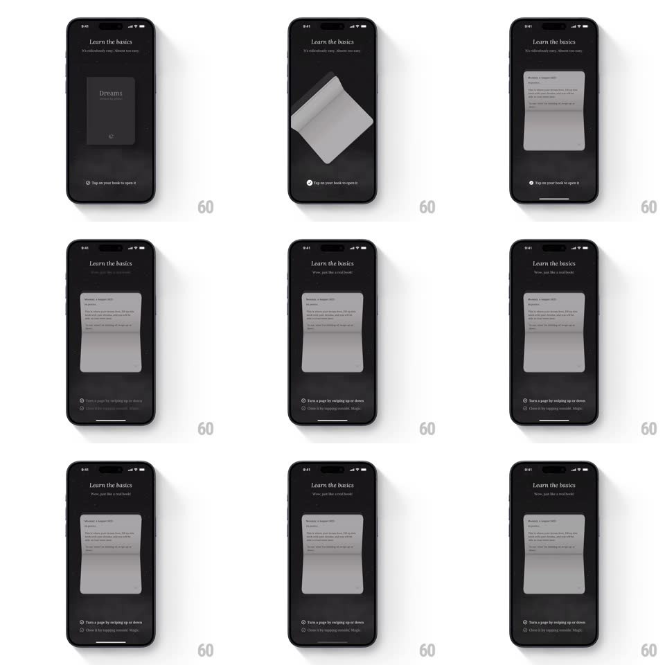

Media
Frame-by-frame

Rebuild this interaction 1:1: Yume's onboarding book - tapping the 3D "Dreams" book opens it with a realistic page flip around the spine, landing on the first text page with new hint copy.

Rebuild this interaction 1:1: Yume's onboarding book - tapping the 3D "Dreams" book opens it with a realistic page flip around the spine, landing on the first text page with new hint copy.
## Integration
Integration: stack-agnostic spec - springs given as stiffness/damping, timed motions as duration + curve; map every value to your framework and animation library of choice.
## Scene
Dark "Learn the basics" screen: a skeuomorphic book (titled "Dreams") resting tilted in 3D, hint text below ("Tap on your book to open it", then "Turn a page by swiping up or down"); the open state shows a full text page.
## Motion spec
Pattern: tap-triggered 3D page flip, ~700ms.
- Tap: the book straightens toward the viewer (rotateX/rotateY to 0, spring ~260/24, 350ms) and scales up 10%.
- Flip: the cover page rotates around the left spine (rotateY 0 -> -180deg, 650ms, ease-in-out) with a page curl - the leading edge lifts and bends (cylindrical warp peaking mid-flip) and the page's back face shows a dimmed mirror of the front.
- Settle: the flipped page lies flat (2deg residual tilt) as the revealed text page fades its content in (200ms, staggered per paragraph, 40ms apart).
- The hint copy crossfades to the next instruction (200ms) as the flip starts.
## Calibration
- The spine stays fixed - all rotation pivots on the book's left edge.
- The curl is geometric (warp), not a sprite swap.
## Reduced motion
The cover fades open without the flip.
## Don't miss
- The back of the turning page is visible mid-flip - model both faces.
- Text fades in only after the page lands.